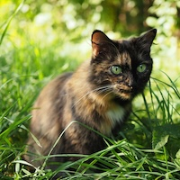

Grumpy Cat
The famous grumpy-faced cat that became an internet sensation. Grumpy Cat's unique expressions made her one of the most beloved memes online.
Grumpy Cat's legacy continues to bring smiles to millions of people around the world.
The famous grumpy-faced cat that became an internet sensation. Grumpy Cat's unique expressions made her one of the most beloved memes online.
Grumpy Cat's legacy continues to bring smiles to millions of people around the world.
A unique cat known for her cute appearance and tiny size. Lil Bub captured the hearts of many with her sweet personality.
Her adorable looks and inspiring story made her an internet superstar.
A friendly orange cat that became famous on social media. Jorts is well-loved for his playful and curious nature.
His charming antics and friendly personality have made him an internet favorite.
Jean is often seen hanging out with Jorts and shares his adventures. Jean adds a unique charm to Jorts' escapades.
Together, they make a fantastic duo that captivates audiences.
Maru is known for his love of boxes and playful nature. His curiosity about simple things brings joy to viewers.
Maru's box adventures are a delight to watch, and he remains a beloved internet figure.
Nyancat is an iconic internet cat, featuring a Pop-Tart body flying through space. The colorful trails and catchy tune made it unforgettable.
Nyancat's enduring popularity makes it one of the most recognized internet phenomena.